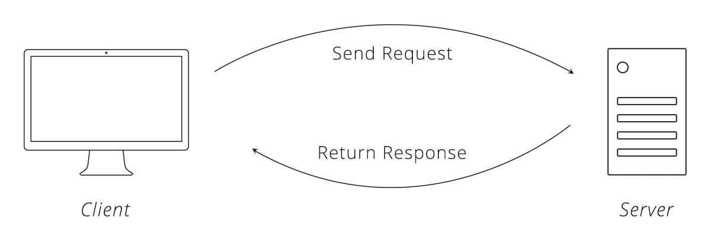

Archivos JSON
Qué es JSON, sus tipos y comparación con XML, serialización en .NET y consumo de servicios web.
Qué es JSON
Tipos y formato
JSON vs XML
Serialización
System.Text.Json
Servicios web

¿Qué es JSON?
JSON (JavaScript Object Notation) es un formato de texto sencillo para el intercambio de datos.
Ligero y legible
Fácil de leer y escribir para personas, y simple de interpretar y generar para las máquinas.
Independiente del lenguaje
Nació de JavaScript, pero hoy es un formato de texto independiente de cualquier lenguaje de programación.
¿Por qué apareció JSON?
A los '90 surgió el problema de que máquinas con distintos SO y lenguajes se entendieran. La primera solución fue XML.
El problema de XML
Con gran volumen de datos, el procesamiento se volvía lento y los archivos pesados.
La respuesta: JSON
Creado por Douglas Crockford. Reduce el tamaño de los archivos y los datos a transmitir; se volvió un estándar.
¿Para qué se usa?
APIs REST
El formato de intercambio por defecto de la mayoría de las APIs web.
AJAX
Intercambio de datos entre el navegador y el servidor sin recargar la página.
Configuración y datos
Archivos de config, persistencia y mensajería entre servicios.
Un ejemplo de JSON
{
"departamento": 8,
"nombredepto": "Ventas",
"director": "Juan Rodríguez",
"empleados": [
{ "nombre": "Pedro", "apellido": "Fernández" },
{ "nombre": "José", "apellido": "Macome" }
]
}
Pares "nombre": valor entre llaves; listas entre corchetes; se puede anidar.
Tipos de datos aceptados
Números
Enteros o con parte fraccional; admiten negativos. 30, -1.5
Cadenas
Entre comillas dobles, con escapes. "Hola"
Booleanos
true / false
null
El valor nulo. null
Array
Lista ordenada entre corchetes. ["a","b"]
Objeto
Pares nombre:valor entre llaves.
JSON vs XML
JSON
{
"actor": [
{ "id": "01",
"name": "Tom",
"lastname": "Hanks" },
{ "id": "02",
"name": "Nick",
"lastname": "Thameson" }
]
}
XML
<root> <actor> <id>01</id> <name>Tom</name> <lastname>Hanks</lastname> </actor> </root>
JSON suele ser más compacto y rápido de procesar para grandes volúmenes.
A tener en cuenta
- JSON es solo un formato de datos (no es código que se ejecuta).
- Comillas dobles obligatorias en cadenas y nombres de propiedades; las simples no son válidas.
- Una coma o dos puntos mal ubicados rompen el archivo.
- El valor de nivel superior puede ser cualquier tipo válido: una cadena o un número solos también son JSON válido.
- A diferencia de JavaScript, en JSON las propiedades siempre van entre comillas.
Serializar y deserializar
Serializar es convertir un objeto en una secuencia de bytes o texto que lo representa; deserializar es el camino inverso.
Objeto (clase)
Una instancia en memoria.
Serializar →
objeto → cadena JSON.
← Deserializar: JSON → objeto.
JSON (string)
Texto que se guarda o transmite.
¿Para qué sirve?
Persistencia
Guardar el estado de un objeto en archivos o bases de datos.
Comunicación de red
Enviar datos entre sistemas o componentes.
Clonación
Crear una copia exacta de un objeto.
Colas de mensajes
Enviar objetos a través de sistemas de mensajería.
JSON en .NET: dos opciones
System.Text.Json
Incorporado en el propio SDK: no necesita instalar nada. Moderno y de alto rendimiento.
recomendadoNewtonsoft.Json
Librería externa (se obtiene por NuGet). Muy usada históricamente, con muchas funciones.
externa (NuGet)En la clase usamos System.Text.Json.
Componentes principales
| Tipo | Para qué |
|---|---|
JsonSerializer | Serializa objetos .NET a JSON y deserializa JSON a objetos. El más usado. |
JsonDocument | Examinar la estructura de un documento JSON. |
JsonElement | Representa un valor específico dentro de un documento JSON. |
Utf8JsonWriter / Utf8JsonReader | API de alto rendimiento para escribir/leer JSON UTF-8 token a token. |
Serializar: objeto → JSON
using System.Text.Json; public class Producto { public string Nombre { get; set; } public int Precio { get; set; } } Producto papas = new Producto { Nombre = "Papas Fritas", Precio = 30 }; string json = JsonSerializer.Serialize(papas); Console.WriteLine(json);
Pasos
- Definir una clase con la estructura.
- Crear una instancia con valores.
- Llamar a
JsonSerializer.Serialize. - Usar la cadena JSON resultante.
{"Nombre":"Papas Fritas","Precio":30}Deserializar: JSON → objeto
using System.Text.Json; string json = "{\"Nombre\":\"Papas Fritas\",\"Precio\":30}"; Producto p = JsonSerializer.Deserialize<Producto>(json); Console.WriteLine( $"Nombre: {p.Nombre}, Precio: {p.Precio}");
Pasos
- Definir la misma clase usada al serializar.
- Tener la cadena JSON (su estructura debe coincidir).
- Llamar a
JsonSerializer.Deserialize<T>. - Usar el objeto resultante.
Si los nombres no coinciden exacto, se usan opciones (PropertyNameCaseInsensitive).
¿Qué es un servicio web?
Una aplicación que interactúa con otras a través de la web usando estándares y protocolos abiertos, permitiendo que apps en distintos lenguajes y plataformas se comuniquen.
¿Para qué se usan?
Integración
Conectar sistemas dentro o entre organizaciones.
Intercambio de datos
Comunicación entre apps web y móviles.
Automatización
Procesos de negocio entre servicios.
Escalabilidad
Microservicios y APIs flexibles.
Acceso remoto
Funcionalidades y datos desde cualquier lugar.
El protocolo HTTP
Funciona con el ciclo solicitud–respuesta: el cliente pide algo, el servidor responde.

HttpClient
La clase de .NET para enviar solicitudes HTTP (GET, POST, …) a un servidor.
Asincronía
Operaciones async: no bloquea el hilo principal.
Configurable
Encabezados, timeout, autenticación, cookies.
Reutilizable
Conviene reusar una sola instancia en toda la app.
Contenidos diversos
JSON, XML, archivos, formularios.
Consumir una API con HttpClient
private static readonly HttpClient client = new HttpClient(); private static async Task GetClima() { var url = "https://ws.smn.gob.ar/map_items/weather/"; HttpResponseMessage response = await client.GetAsync(url); response.EnsureSuccessStatusCode(); // 2xx o lanza excepción string body = await response.Content.ReadAsStringAsync(); List<Root> clima = JsonSerializer.Deserialize<List<Root>>(body); foreach (var prov in clima) Console.WriteLine($"{prov.name}: {prov.weather.temp}"); }
async / await. Pedimos el JSON, lo leemos como texto y lo deserializamos a objetos C#.Repaso & ejercicios
En una línea
JSON es texto para intercambiar datos; con JsonSerializer pasás de objeto a JSON y viceversa, y con HttpClient consumís servicios web que devuelven JSON.
Ejercicios
- Serializar y deserializar una clase propia.
- Guardar/leer el JSON desde un archivo (clase 8).
- Consumir una API pública y mostrar sus datos.
Bibliografía
System.Text.Json— docs de .NET- JSON — json.org
HttpClient— docs de .NET